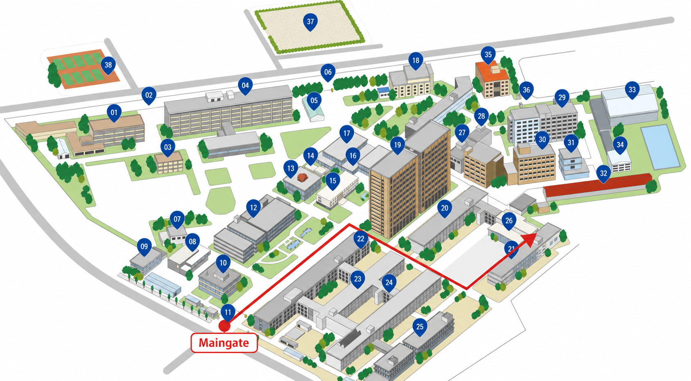

Access
Access
Address
Semiconductor Integrated Device Engineering Laboratory, University of Fukui
3-9-1 Bunkyo, Fukui 910-8507, Japan
Research Building IV-2 (Engineering Laboratory Building), Bunkyo Campus, University of Fukui
Note: The building is about a 5-minute walk from the main gate.
Professor's office3F IV-2322
Laboratory1F IV-2126
Directions from the main gate

- Enter through the main gate and proceed toward the Faculty of Engineering area.
- At the campus guide board, look for “21 / Research Building IV-2 (Engineering Laboratory Building)” and proceed to the building.
- Enter through the automatic door to the right of the arrow, then go to the professor's office (3F IV-2322) or laboratory (1F IV-2126), as appropriate.
Transportation
- By Echizen Railway: about a 2-minute walk from Fukudai-Mae-Nishi-Fukui Station on the Mikuni Awara Line to the university's main gate.
- By Bus: From Bus Stop No. 2 at the west exit of JR Fukui Station, take a Keifuku Bus for about 10 minutes and get off at “Fukui-Daigaku-Mae.”
- By Taxi: about 10 minutes from JR Fukui Station. Ask the driver for “University of Fukui, Bunkyo Campus.”
For building locations and routes within campus, please refer to the official University of Fukui access information and campus map.